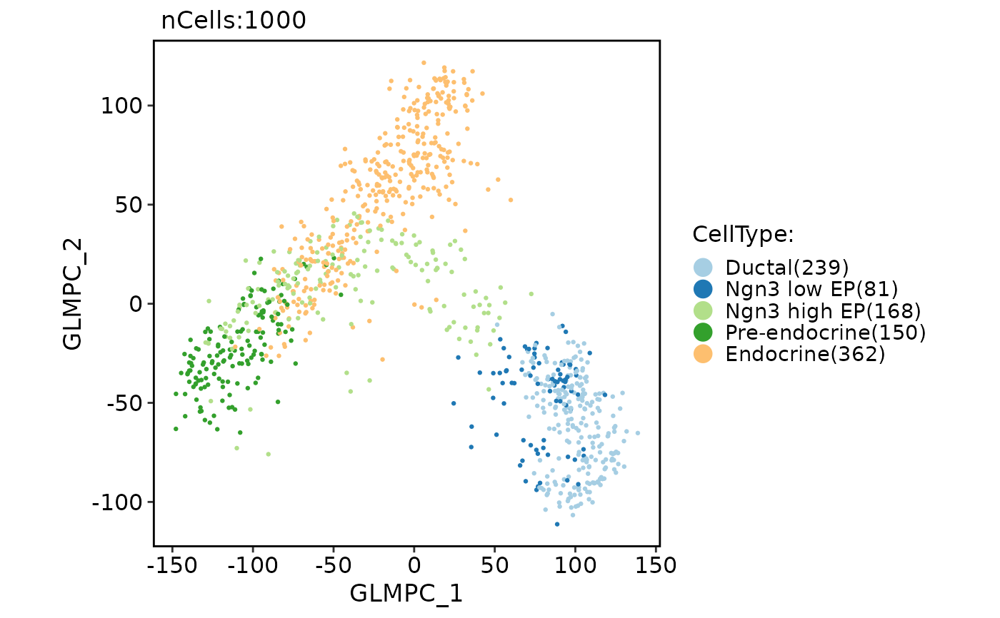

Run GLMPCA (generalized version of principal components analysis)
Source:R/Seurat-function.R
RunGLMPCA.RdRun GLMPCA (generalized version of principal components analysis)
Usage
RunGLMPCA(object, ...)
# S3 method for Seurat
RunGLMPCA(
object,
assay = NULL,
slot = "counts",
features = NULL,
L = 5,
fam = c("poi", "nb", "nb2", "binom", "mult", "bern"),
rev.gmlpca = FALSE,
ndims.print = 1:5,
nfeatures.print = 30,
reduction.name = "glmpca",
reduction.key = "GLMPC_",
verbose = TRUE,
seed.use = 11,
...
)
# S3 method for Assay
RunGLMPCA(
object,
assay = NULL,
slot = "counts",
features = NULL,
L = 5,
fam = c("poi", "nb", "nb2", "binom", "mult", "bern"),
rev.gmlpca = FALSE,
ndims.print = 1:5,
nfeatures.print = 30,
reduction.key = "GLMPC_",
verbose = TRUE,
seed.use = 11,
...
)
# S3 method for default
RunGLMPCA(
object,
assay = NULL,
slot = "counts",
features = NULL,
L = 5,
fam = c("poi", "nb", "nb2", "binom", "mult", "bern"),
rev.gmlpca = FALSE,
ndims.print = 1:5,
nfeatures.print = 30,
reduction.key = "GLMPC_",
verbose = TRUE,
seed.use = 11,
...
)Arguments
- object
An object. This can be a Seurat object, an assay object, or a matrix-like object.
- ...
Additional arguments to be passed to the glmpca function.
- assay
A character string specifying the assay to be used for the analysis. Default is NULL.
- slot
A character string specifying the slot name to be used for the analysis. Default is "counts".
- features
A character vector specifying the features to be used for the analysis. Default is NULL, which uses all variable features.
- L
An integer specifying the number of components to be computed. Default is 5.
- fam
A character string specifying the family of the generalized linear model to be used. Currently supported values are "poi", "nb", "nb2", "binom", "mult", and "bern". Default is "poi".
- rev.gmlpca
A logical value indicating whether to perform reverse GLMPCA (i.e., transpose the input matrix) before running the analysis. Default is FALSE.
- ndims.print
An integer vector specifying the dimensions (number of components) to print in the output. Default is 1:5.
- nfeatures.print
An integer specifying the number of features to print in the output. Default is 30.
- reduction.name
A character string specifying the name of the reduction to be stored in the Seurat object. Default is "glmpca".
- reduction.key
A character string specifying the prefix for the column names of the basis vectors. Default is "GLMPC_".
- verbose
A logical value indicating whether to print verbose output. Default is TRUE.
- seed.use
An integer specifying the random seed to be used. Default is 11.
Examples
pancreas_sub <- RunGLMPCA(object = pancreas_sub)
#> GLMPC_ 1
#> Positive: Dusp2, Rgs13, Ctss, Trmo, Ccl2, Rasd2, Tnni3, Isy1, Casp12, Ms4a15
#> Cmah, Cd53, Gm29155, Adamts2, Ctgf, Hpdl, AW112010, Pxdc1, Hist1h2ap, Ublcp1
#> Hist1h2an, Ddr2, AB124611, Upk3b, Cxcr4, Gp2, Gm5786, Obscn, Fcrls, Sparcl1
#> Negative: Bgn, Cyp4f17, Hoxb4, Nrk, Ngfr, Adgrb1, Ngf, Tspan11, Saa3, Ptchd1
#> 9130230L23Rik, Fibcd1, Krtap31-1, Pgm5, Sh2d5, Scn1b, 1700128E19Rik, Gm17552, Hoxc5, Kcnc1
#> Tgm7, Dgkb, Bhlhe22, Nhlh1, Rogdi, Cd248, Avpr1b, Depdc1b, Cbln4, Kdr
#> GLMPC_ 2
#> Positive: Mthfd1l, Ssu2, Dkk2, Lrrc17, Cd300lf, Prdm8, Casp1, Gp9, Fxyd5, Kpna7
#> Ctrl, Clec3b, Krtap31-1, Dusp2, Pid1, Kcng2, Lpl, Col1a2, Lrp1b, Ublcp1
#> Krtap3-2, Srpx, AI849053, AW112010, Rgs13, Pcdh18, Gad2, F13a1, Il16, Nid1
#> Negative: Hhip, Piezo2, Cfap100, Zcchc24, Anxa1, Depdc1b, Fam64a, Rasgrp2, Gm44296, Cenpf
#> Hist1h2ah, Parpbp, Ccnb1, Troap, Kif14, Kif2c, Ube2c, Mpeg1, Hmmr, Ascl1
#> Pif1, Slc4a1, Gm26733, Cdc20, Tpx2, Hapln3, Cenpa, Clic3, Cenpe, Kif18b
#> GLMPC_ 3
#> Positive: Cxcl1, Ccl2, Pdcd1, Tnf, Cxcl2, Gpr153, Usp44, Cd4, Csf2rb, Fxyd5
#> Gp9, Adamts2, Sparcl1, Cxcl10, Krtap31-1, Gad2, F13a1, Rgs13, Prdm8, Siglech
#> Phf21b, Hes5, Gp2, Gm5786, Il16, Gm26839, Trem2, Lrp1b, Hist1h2ao, Lpl
#> Negative: Pde3a, Apbb1ip, Sst, Slamf9, Itga8, Ddr2, Toe1, Prnp, Irx3, Entpd8
#> Medag, Cxcl13, Ltf, Stab2, A930011G23Rik, Col1a1, Wnt6, Ptgs2, Kng2, Cpa3
#> Gpr6, Aoc1, Slco1a6, Itgb7, Col6a1, Ublcp1, Cldn5, Spock1, Gm2109, Ppy
#> GLMPC_ 4
#> Positive: Pcdh18, Cd37, R3hdml, Nid1, Krtap3-2, AI849053, Ghrl, Lypd8, Cpa4, Stmn4
#> Irs4, Wnt6, Mmp2, Cxcl13, Ltf, Car14, Guca2a, H2-Ab1, Barx1, Fli1
#> Hist1h4f, Gm3839, Ccl3, Car3, Arap3, Fabp1, Arsi, Kdr, Sds, Serpina1a
#> Negative: Fcrls, Ms4a6d, Gna15, Cxcl1, Sparcl1, Gfra2, Ins1, RP24-143K11.1, Pde7b, Trh
#> Ptprz1, Prl, Npy, Grid1, Aif1, Tmem215, Tnfaip8l2, Ins2, Ecel1, Gm20635
#> Gip, Cxcl2, Troap, Ltc4s, Slc19a1, Tnf, Apobec1, Aldh1a3, Plat, Gm36937
#> GLMPC_ 5
#> Positive: Cd36, Calcr, Fermt3, Gprasp1, Il1b, Luzp2, Lst1, Galnt13, Hoxb2, Cadm3
#> Add2, Gast, Dock2, Chil1, Asb4, Ifit3, Gabrg2, Gnb4, Mc4r, Ecm1
#> Nell1, Nrsn1, Dcn, Slc14a2, Sema6d, Islr, Hist1h3g, 4930455G09Rik, Slc18a2, Cd83
#> Negative: Stmn4, Krtap31-1, Cfap100, Itgal, Zcchc24, Mmp2, Hist1h2ah, Piezo2, Cd37, Siglech
#> Hhip, Fhl3, Irx3, Ccr1, Depdc1b, Phf21b, Apoe, Hoxb4, Aoc1, Sds
#> Col1a1, Tcte3, Gna15, Hapln3, Anxa1, Hist1h2an, Cxcl13, Ltf, Trem2, Gm26839
CellDimPlot(pancreas_sub, group.by = "CellType", reduction = "glmpca")
